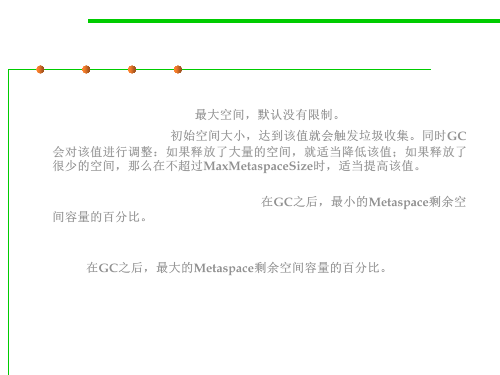

8.1 Metrics, Principles, and Methods of Construction for Performance
(1) Tuning VM Heap Size
▪ The size of the Metaspace：
– -XX:MaxMetaspaceSize，最大空间，默认没有限制。
– -XX:MetaspaceSize，初始空间大小，达到该值就会触发垃圾收集。同时GC
会对该值进行调整：如果释放了大量的空间，就适当降低该值；如果释放了
很少的空间，那么在不超过MaxMetaspaceSize时，适当提高该值。
– -XX:MinMetaspaceFreeRatio is the minimum percentage of class metadata
capacity free after garbage collection 在GC之后，最小的Metaspace剩余空
间容量的百分比。
– -XX:MaxMetaspaceFreeRatio is the maximum percentage of class metadata
capacity free after a garbage collection to avoid a reduction in the amount of
space 在GC之后，最大的Metaspace剩余空间容量的百分比。